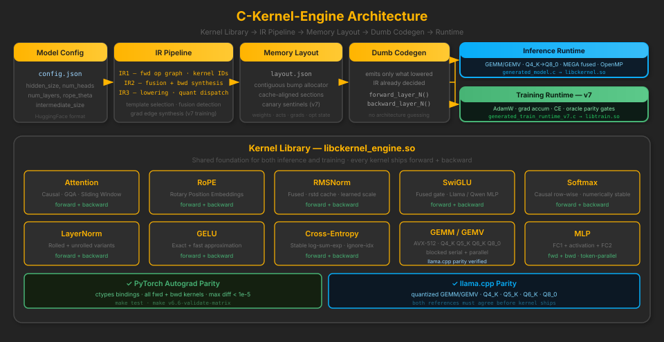

C-Kernel-Engine
A code generator and kernel library for LLM training and inference in pure C. Every kernel has a forward and backward pass, validated to < 1e-5 against PyTorch autograd. The IR pipeline makes every architectural decision explicit and auditable — from graph lowering to memory layout to the final byte of generated C.
Why this exists: build extremely lightweight AI systems without sacrificing performance or security, keep the full stack auditable end-to-end (math kernels -> training -> mechanistic interpretability), and stay CPU-first across embedded devices, commodity servers, and offline deployments.
What is C-Kernel-Engine?
The first version of C-Kernel-Engine tried to drive generation from HuggingFace config.json alone. That was not enough: config metadata does not fully capture quantized weight packing/layout details, nor all runtime stitching constraints needed for reliable kernel binding.
The current pipeline pulls GGUF as the weight/quantization source of truth, parses it, and combines that with C-Kernel-Engine templates and config hints. That merge produces deterministic weights.bump + sidecar metadata. From that point forward, the same IR chain can target either inference (v6.6) or training/backprop (v7).
The architecture is deliberately split into a smart front-end (template selection, manifest resolution, IR construction, backward synthesis, layout planning, fusion detection) and a dumb back-end (a codegen emitter that only writes what the lowered IR already decided). This makes correctness auditable at every stage.
Why the Bump Format Exists
weights.bumpis a contiguous binary blob optimized for deterministic C runtime access by offset.- The sidecar (for example
weights_manifest.json) records tensor names, offsets, shapes, dtypes, quantization metadata, and template bindings. bump + sidecaris the handoff contract that gives IR1 enough concrete information to lower, codegen, and run inference or backprop paths without hidden runtime guesses.
The IR Pipeline
Both inference and training share the same IR foundation. The inference path (v6.6) adds quantized dispatch and MEGA kernel fusion. The training extension (v7) adds backward synthesis, explicit gradient accumulation, and a separate training memory layout — built on top of the same IR1/IR2 lowering chain.
Q4_0 · Q4_K · Q5_K · Q6_K · Q8_0 · BF16 · FP32
→ layout.json
no architecture guessing in the emitter
GEMM / GEMV quantized dispatch
MEGA fused kernels (prefill + decode)
OpenMP thread pool
accumulation windows → ir2_train_backward.json
canary sentinels between sections → layout_train.json
canary write + verify by phase
AdamW · grad accumulation windows
cross-entropy (stable log-sum-exp)
PyTorch oracle parity gates
The kernel library is the shared foundation for both pipelines — every kernel used in inference is also the backward-pass primitive used in training:

Correctness
Every claim of correctness is backed by a specific, reproducible test. Parity is not a property we assert — it is something we measure at every kernel boundary, training step, and memory section.
Kernel Parity Gates
| max diff < 1e-5 | All forward and backward kernels tested via Python ctypes against PyTorch autograd. Fails hard on violation. |
| llama.cpp parity | Quantized GEMM/GEMV kernels (Q4_K, Q5_K, Q6_K, Q8_0) verified against llama.cpp reference output — not just PyTorch. Both references must agree. |
| per-kernel test | Each kernel ships its own Python parity test. make test runs the full suite. |
| model matrix | make v6.6-validate-matrix runs the full kernel contract suite across GPT-2, Qwen2, Qwen3, Gemma3. |
Training Parity (v7)
| oracle cadence | Step-level and slot-level checks against a live PyTorch oracle. Run with --parity-on. |
| first-divergence | Operator + tensor level tracing. Reports the exact step, op, and tensor where CK diverges from PyTorch. |
| canary sentinels | Memory integrity markers between training phases (weights / activations / grads / optimizer state). Written and verified each phase. |
| 850-step repro | Deterministic parity run across all three backends (c / c_ptref / torch). Artifacts in train_runtime_parity_*_latest.json. |
Performance
Profiling + SIMD
| VTune + flamegraph | Hardware counter integration via the IR Visualizer. Load run artifacts and inspect per-op hotspots with full flamegraph data. |
| AVX-512 MEGA kernels | RMSNorm + QKV + RoPE fused. MLP + Residual fused. Fusion patterns detected automatically at IR2. (v6.6) |
| AMX | Intel Advanced Matrix Extensions support coming in a future version. |
| OpenMP thread pool | Parallel prefill and decode passes. Token-parallel MLP. (v6.6) |
| Bump allocator | Cache-aligned, contiguous weight layout. Zero-copy load from GGUF. No heap fragmentation in hot paths. |
Tokenizer — 16.5x Faster
Trie-based BPE/WordPiece tokenization. O(k) lookup vs O(n×k). No memcpy in hot path. Full UTF-8 multilingual support.
| Text Length | C-Kernel | PyTorch | Speedup |
|---|---|---|---|
| 200 chars | 20,941/s | 4,616/s | 4.5x |
| 3,000 chars | 95,923/s | 6,197/s | 15.5x |
| 15,000 chars | 114,463/s | 6,237/s | 18.4x |
Average: 16.56x faster than PyTorch/tiktoken
Kernel Library
All kernels implement forward and backward passes. Each ships with a Python ctypes parity test that loads libckernel_engine.so and compares output against PyTorch autograd with max diff < 1e-5:
| Kernel | Forward | Backward | Notes |
|---|---|---|---|
attention |
Yes | Yes | Causal mask, GQA, sliding-window, head-major layout |
rope |
Yes | Yes | Rotary position embeddings, precomputed cache |
rmsnorm |
Yes | Yes | Fused normalization, rstd caching, learned scale |
swiglu |
Yes | Yes | Fused gate activation for Llama/Qwen-style MLP |
softmax |
Yes | Yes | Causal row-wise, numerically stable |
layernorm |
Yes | Yes | Rolled and unrolled variants |
gelu |
Yes | Yes | Exact and fast approximation variants |
cross_entropy |
Yes | Yes | Stable log-sum-exp, mean reduction, ignore-index |
gemm |
Yes | N/A | Blocked serial, AVX-512, parallel — Q4_K · Q5_K · Q6_K · Q8_0 · FP32 |
mlp |
Yes | Yes | FC1 + activation + FC2, token-parallel |
Kernel Reference → Model × Kernel Matrix →
Quick Start
Build + Parity Test
git clone https://github.com/antshiv/C-Kernel-Engine.git cd C-Kernel-Engine make # builds build/libckernel_engine.so make test # runs all kernel parity tests vs PyTorch
Requires Linux, GCC, Python 3 + PyTorch for parity tests. AVX2 minimum; AVX-512 recommended.
Inference — Generate C Runtime
make ck-emit \ CONFIG=path/to/config.json \ OUT=build/generated_model.c
Emits a complete C file from IR. Load GGUF quantized weights via make gguf-convert.
Training — v7 IR Runtime
. .venv/bin/activate python version/v7/scripts/ck_run_v7.py init \ --run /tmp/myrun \ --template qwen3 \ --generate-ir --generate-runtime --strict python version/v7/scripts/ck_run_v7.py train \ --run /tmp/myrun \ --backend ck --parity-on
Produces IR1, IR2, layout, generated C runtime, and parity artifacts.
Operator Spectrum (1 → 8)
Raw Corpus → Tokenizer → Data Prep → Transformer IR → Forward → Backward → Loss → Inference.
Project Structure
src/kernels
`-- fused
version/v6.6
|-- docs
|-- include
|-- kernel_maps
|-- patches
|-- scripts
| `-- parity
|-- src
| |-- generated
| |-- kernel_config
| |-- scripts
| `-- test_generated
|-- templates
|-- test
|-- testing
|-- tests
|-- tools
`-- unittest
version/v7
|-- contracts
|-- data
| |-- eval_contracts
| |-- generated
| | |-- toy_svg_semantic_shapes_tokenizer
| | `-- toy_svg_structured_atoms_tokenizer
| |-- probe_contracts
| |-- spec03
| | |-- contracts
| | |-- holdout
| | |-- manifests
| | |-- midtrain
| | |-- normalized
| | |-- pretrain
| | |-- raw_assets
| | |-- sft
| | `-- tokenizer
| `-- spec04
| |-- contracts
| |-- holdout
| |-- manifests
| |-- midtrain
| |-- normalized
| |-- pretrain
| |-- raw_assets
| |-- sft
| `-- tokenizer
|-- docs
|-- include
|-- kernel_maps
|-- regression
|-- reports
| |-- profile_train_latest
| | `-- vtune_hotspots
| `-- spec12_gold_mappings
|-- runs
| |-- logs
| |-- overnight_monitor
| | `-- spec10
| |-- spec10_asset_scene_dsl_l3_d192_h384_ctx512_r1
| | |-- checkpoints
| | |-- dataset
| | |-- profile_train_latest
| | `-- tokenizer_bin
| |-- spec10_asset_scene_dsl_l3_d192_h384_ctx512_r2
| | |-- checkpoints
| | |-- dataset
| | |-- profile_train_latest
| | `-- tokenizer_bin
| |-- spec10_asset_scene_dsl_l3_d192_h384_ctx512_r3
| | |-- checkpoints
| | |-- dataset
| | |-- profile_train_latest
| | `-- tokenizer_bin
| `-- svg_l16_d128_h512_v1024_seq512 -> /home/antshiv/.cache/ck-engine-v7/models/train/svg_l16_d128_h512_v1024_seq512
|-- scripts
| |-- dataset
| `-- parity
|-- src
|-- templates
|-- test
|-- tests
| |-- contracts
| `-- fixtures
`-- tools
`-- src
87 directories